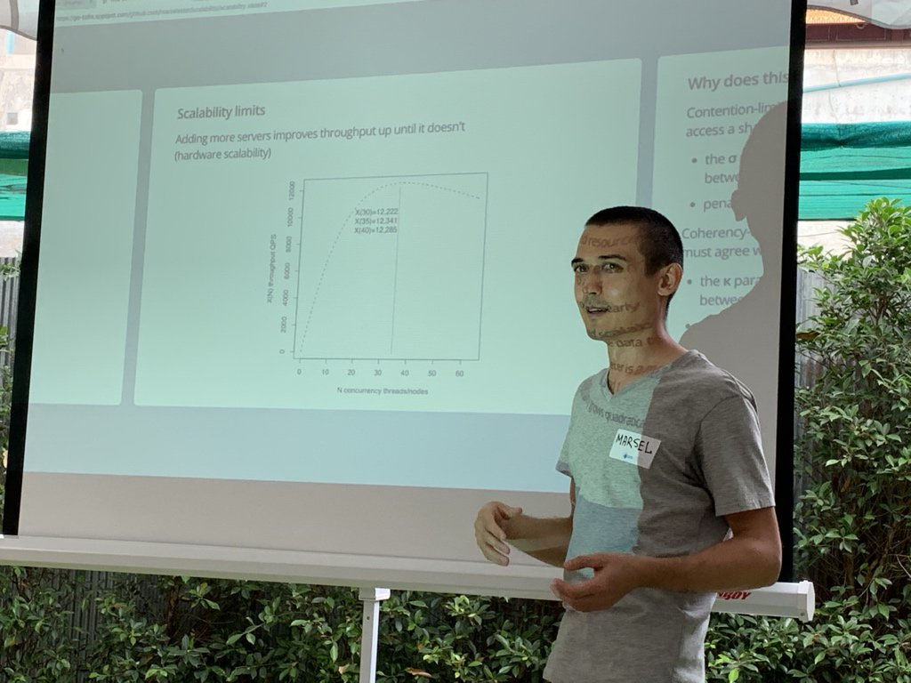

Marsel Mavletkulov¶
I find professional satisfaction in building reliable services, writing documentation and clear Go code. I would like to learn more about systems performance.
Based in Montreal, Canada.
Work Experience¶
Site Reliability Engineer at fintech startup Coins.ph 🚀 February 2021 — December 2022 Software Architect August 2017 — September 2020 Senior Software Engineer July 2014 — August 2017
built a wallet service (Django, PostgreSQL) which helped the company to grow from thousands to over 15 millions of customers;
designed a new ledger (Go, PostgreSQL, Kafka) to solve scalability issues and led the team focused on its delivery;
ran an architecture guild meetings, gave talks about architecture, Kafka, LSM storages, PostgreSQL, scalability of web services, SaltStack;
set up CI, and infrastructure based on SaltStack which helped to quickly provision dozens of EC2 instances to cope with exponential growth;
introduced ELK, Prometheus, Jaeger to help developers with troubleshooting;
decoupled and redesigned the core services from Flask monolith to scale them independently, e.g., currency quotes service, account management service (sign up/in, TFA);
helped with Go adoption (no ORM, web or testing frameworks): common project structure leveraging Go kit components (JSON/gRPC transports, telemetry, rate limiter, circuit breaker);
improved code quality, architecture and advocated for both (conventions/proposals gardening similar to Go proposals);
as a first remote developer helped to scale the engineering team which ended up working remotely;
fostered an engineering culture of service ownership;
been on-call to provide a quick incident response;
To try something different I joined infrastructure team as an SRE
added horizontal/vertical pod autoscaling for 17 services which increased resiliency of our services, helped to handle x2 traffic, reduced infrastructure costs by 20%;
rewrote parts of 5 Django/Celery core services in Go to reduce memory (tens of gigabytes) and CPU consumption in Kubernetes cluster, see gopher-celery;
improved internal tooling, e.g., wrote a Terraform plugin to rotate PostgreSQL roles, implemented observability tool for Celery queues in Go, a dynamic service configuration based on AWS SSM, EventBridge, Kafka;
introduced continuous profiling and reconstructed a BPF agent for fun;
investigated and resolved API latency outliers, e.g., AWS SDK latency due to AWS STS requests going to the global endpoint, and misconfigured SNS retry policy;
Python Developer contractor at icon fonts generator Fontastic (Webalys) 🤌 January 2014 — July 2014
improved project monetization with SVG sprite hosting and billing, e.g., implemented recurring PayPal payments, usage limits of font hosting, coroutine based AWS S3 and CloudFront log analyzer);
introduced infrastructure as code (Ansible) to limit human errors;
refactored and documented backend (Django, PostgreSQL) reducing tech debt;
Python Developer at cloud-based file upload SaaS Uploadcare 🆙 November 2012 — August 2013
integrated Stripe so that the company could start generating revenue;
developed customer dashboards (Django, PostgreSQL);
improved API client pyuploadcare (mass refactoring, documentation, Python3 support, first major release);
Python Developer at concert organization startup FanGid.com 🤟 July 2012 — October 2012
launched the project in 3 months (two developers) and it started to sell tickets;
developed the following Django components: social auth, voting system, concert’s pages, singer’s profile page, displaying similar bands, email sending, monetization (tickets, orders, discounts, payments);
🎓¶
In 2005 I enrolled in Samara State Aerospace University, then in 2007 relocated and continued the curriculum at Ufa State Aviation Technical University, graduating in 2012 with Master’s degree in Computer Science.
